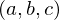

Expression of type And¶
from context proveit.logic.boolean.conjunction¶
In [1]:
import proveit
# Automation is not needed when building an expression:
proveit.defaults.automation = False # This will speed things up.
proveit.defaults.inline_pngs = False # Makes files smaller.
# import Expression classes needed to build the expression
from proveit._common_ import a, b, c, d, e, f
from proveit.logic import And, Or
In [2]:
# build up the expression from sub-expressions
expr = And(Or(a, b, c), Or(b, c, d), Or(d, e, f))
Out[2]:
expr: 
In [3]:
# check that the built expression is the same as the stored expression
%check_expr
In [4]:
# Show the LaTeX representation of the expression for convenience if you need it.
print(expr.latex())
In [5]:
# display the expression information
expr.exprInfo()
Out[5]:
| core type | sub-expressions | expression | |
|---|---|---|---|
| 0 | Operation | operator: 1 operands: 2 | |
| 1 | Literal |  | |
| 2 | ExprTuple | 3, 4, 5 |  |
| 3 | Operation | operator: 8 operands: 6 |  |
| 4 | Operation | operator: 8 operands: 7 |  |
| 5 | Operation | operator: 8 operands: 9 |  |
| 6 | ExprTuple | 10, 11, 12 |  |
| 7 | ExprTuple | 11, 12, 13 |  |
| 8 | Literal |  | |
| 9 | ExprTuple | 13, 14, 15 |  |
| 10 | Variable |  | |
| 11 | Variable |  | |
| 12 | Variable |  | |
| 13 | Variable |  | |
| 14 | Variable |  | |
| 15 | Variable |  |